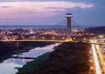

O Piauí é um estado localizado na região Nordeste do Brasil, conhecido por sua beleza natural e rica cultura. Sua capital é Teresina, uma cidade vibrante e cheia de história. O Piauí possui uma paisagem diversificada, incluindo praias no litoral, como a famosa praia de Luís Correia, além de áreas de cerrado, caatinga e o Parque Nacional de Sete Cidades, com suas formações rochosas impressionantes. A economia do estado é baseada na agricultura, na pecuária e na exploração de recursos naturais. Culturalmente, o Piauí é famoso por suas festas tradicionais, como o Festival de Parnaíba e o São João, além de manifestações folclóricas que refletem a mistura de influências indígenas, africanas e europeias. Se desejar mais detalhes, estou aqui para ajudar!
